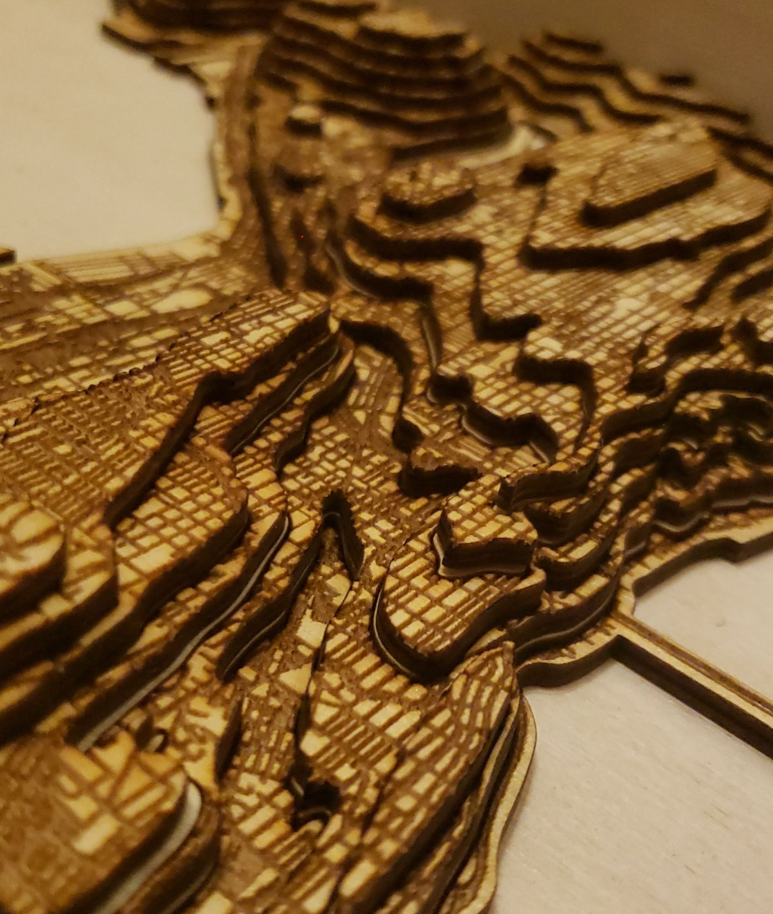
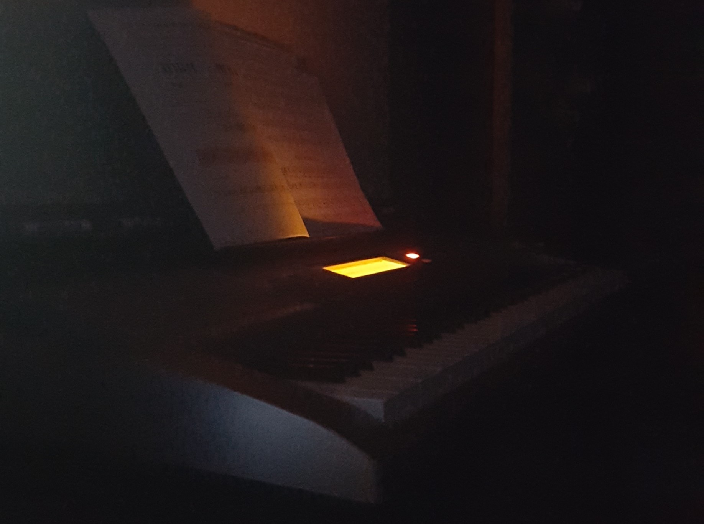
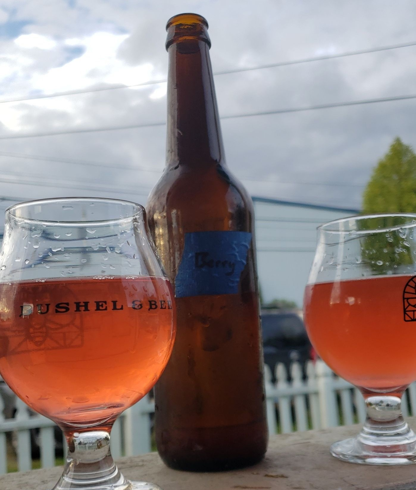

|  |
Laser CuttingI got into laser cutting when I was in Community College where some web surfing gave me plenty of ideas. All I needed was a machine of which I got access to at the start of my college career. The thing I didn't expect going in was the amount of time spent creating the files. Some projects may be quick conversions of images to svg files, while others will require learning new editing tricks to capture the finest details and overcome how the laser interprets the file. All my work has been done in Inkscape and Adobe Illustrator as well as incorporating other tools such as QGIS which is really useful for obtaining map data. |
PianoSince I was a child I have had a knack for keeping rhythm. When I first picked up the guitar and then later the piano I grew this love of playing the instrument(s). There is this calm peacefulness that you get from just sitting and playing a song. Nothing exists outside the instrument at that moment. I keep it set up next to my desk at home so I always have an easy opportunity to take a break and play Its procrastination but productive. |
 |
|  |
MeadAnother hobby of mine has been mead making. There is an incredible amount of variation that one can experiment with, resulting in completely different products, and that excites my creative side. Pictured here is one of the more recent batches I have produced. Made using raspberries and blackberries, it acquired this brilliant color and came out tasting amazing. I almost always have a batch fermenting on the side, trying out some new idea or combination. Some turn out great, like the berry one, while others are not as successful, like grapefruit. |
Laser Cutting
I got into laser cutting when I was in Community College where some web surfing gave me plenty of ideas. All I needed was a machine of which I got access to at the start of my college career.
The thing I didn't expect going in was the amount of time spent creating the files. Some projects may be quick conversions of images to svg files, while others will require learning new editing tricks to capture the finest details and overcome how the laser interprets the file.
All my work has been done in Inkscape and Adobe Illustrator as well as incorporating other tools such as QGIS which is really useful for obtaining map data.
Piano
Since I was a child I have had a knack for keeping rhythm.
When I first picked up the guitar and then later the piano I grew this love of playing the instrument(s). There is this calm peacefulness that you get from just sitting and playing a song. Nothing exists outside the instrument at that moment.
I keep it set up next to my desk at home so I always have an easy opportunity to take a break and play
Its procrastination but productive.
Mead
Another hobby of mine has been mead making. There is an incredible amount of variation that one can experiment with, resulting in completely different products, and that excites my creative side.
Pictured here is one of the more recent batches I have produced. Made using raspberries and blackberries, it acquired this brilliant color and came out tasting amazing.
I almost always have a batch fermenting on the side, trying out some new idea or combination. Some turn out great, like the berry one, while others are not as successful, like grapefruit.
About Me
Hello, My name is Roger Graham Jacobsen, a maker, a designer, and a graduate with a Bachelor degree in Computer Science from Western Washington University. During this period I gained a strong understanding of computational software and hardware through my classes, work experience, and personal projects/hobbies.
Education
My educational journey began with an Associates in Science, taking advantage of early college credit opportunities to leverage a swift degree completion and transition into a Computer Science major and a Mathematics minor at my university. Mostly taught in C and Java, this period had me learning a vast array of software development skills from operating systems development to image processing. With my new skills in hand, I took charge and continued development on my own front. I began by focusing on Front-End Development work, hardening my skills in JavaScript, HTML, and CSS while developing new skills in libraries and frameworks such as jQuery, React.js, as well as many others while simultaneously working on development of a turn based strategy game in Unity 3D and C#.
Work Experience
During my time at university, I sought opportunities to apply my growing knowledge. This led me to a part-time role as an electronics repair technician at CPR Cellphone Repair in Bellingham, WA. It was here at CPR that I got first hand experience with hardware diagnosis and design as I worked diligently on a large variety of devices from phones and computers to game consoles and watches. Collectively, working here I learned many things including soldering, board diagnosis, device repair, customer service, inventory management, and eventually store management and interviewing.
Hobbies
Beyond my degree, my hobbies include practicing music, mostly piano and guitar, laser cutting, brewing, and engaging in various other types of creative activities that don't consistently follow a single theme. In alignment with this, I have been spending my free time volunteering at my local Makerspace where I am surrounded by like minded individuals and can work on projects with a community I respect. My volunteer time is spent doing a variety of tasks such as teaching classes, assisting with projects, and overall being a good face to the space.
Coming to today I took some time off of my career to assist in the remodeling of a family home while building a few projects in the remaining time including this personal portfolio website. With the remodel now complete I began focusing on expanding my skills beyond Front-End Development and onto Full-Stack Dev as well as learning, and constructing small projects utilizing various pseudo-random generation algorithms in preparation for addition to my Unity project while spending my remaining time volunteering and working on projects at the Makerspace.
Sudoku Solver
To keep my JavaScript skills strong, I have been working on various small games/projects hosted in the browser.
The most recent project has been this Sudoku solver. I have become really fascinated in procedural generation algorithms and Sudoku was an amazing project to help in the learning about Wave Function Collapse and the entropy of a system. In this context, each cell has a base entropy that decreases over time as more neighboring cells have reduced entropy.
A follow up project would involve an image generator that can create "random" images from a set of smaller connecting images where each smaller image has rules for its neighboring connections.

Perlin Noise Demo
I've been working on a personal game built in Unity and a big part that I encountered was the need of pseudorandom generation. With this challenge I have been researching and demoing various forms of generation to determine which would work best.
The demo I made here is using sampling of Perlin noise to produce the "random" fluctuations in the terrain height as well as color saturation with the higher points being a brighter shade of red.
Seattle Topographical Road Map
This project spanned years and is one of my favorites.
I first began working on it when I got access to a laser cutter in Community College. Editing and learning various tools to consolidate all of the pieces together to get a final output. And then covid hit.
The project sat on the back-burner until places started opening again and my university provided a maker space for me to cut and complete everything I had done.
I designed and built this model to display each main road and side road while also representing the great elevation of the city, with every layer representing 20 meters. Thats about the size of a two story house!